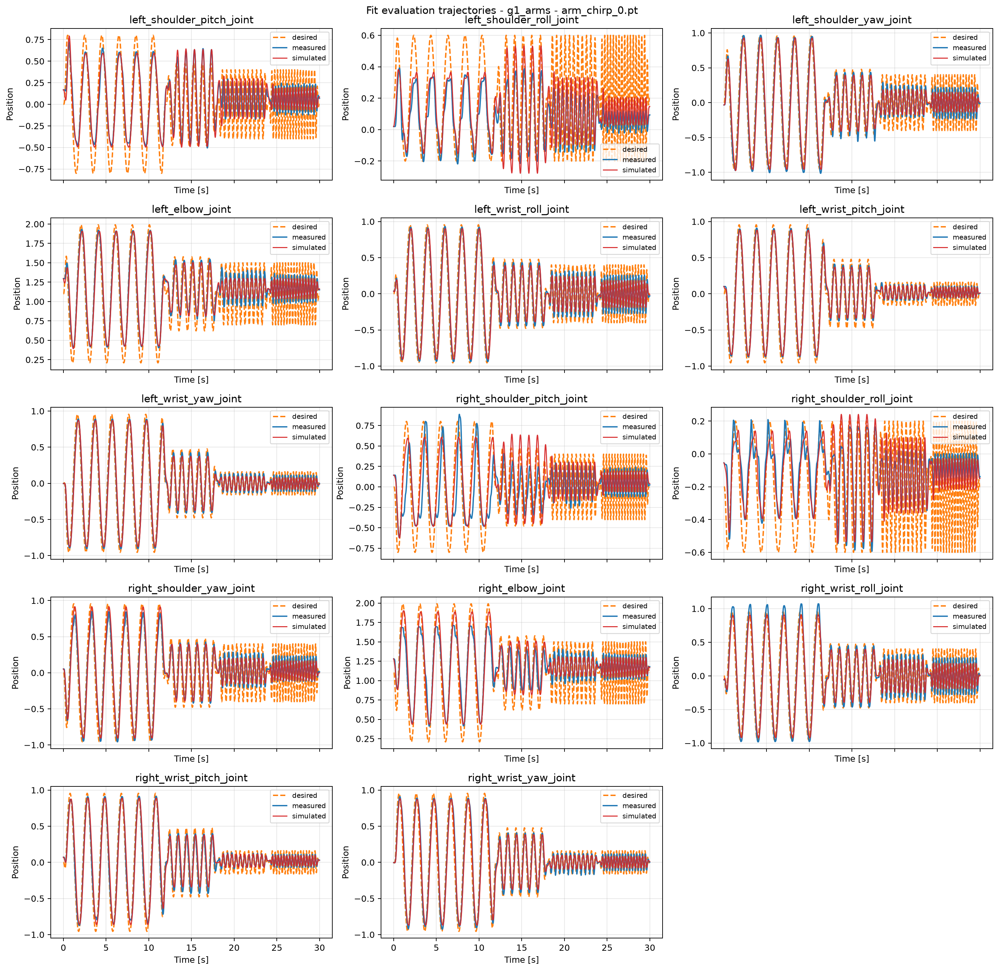
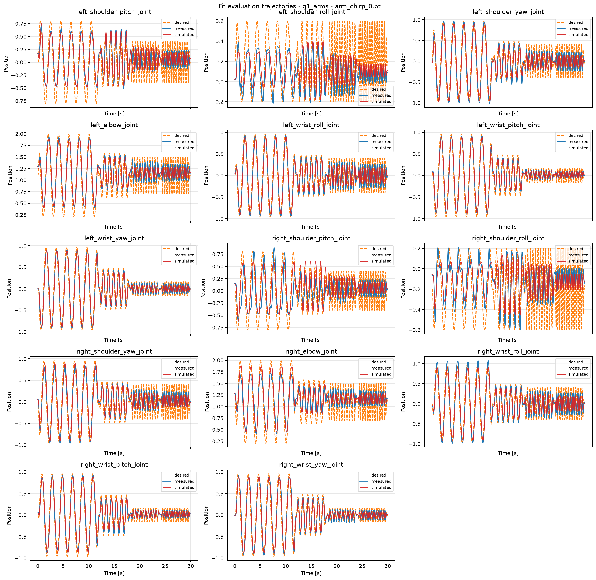
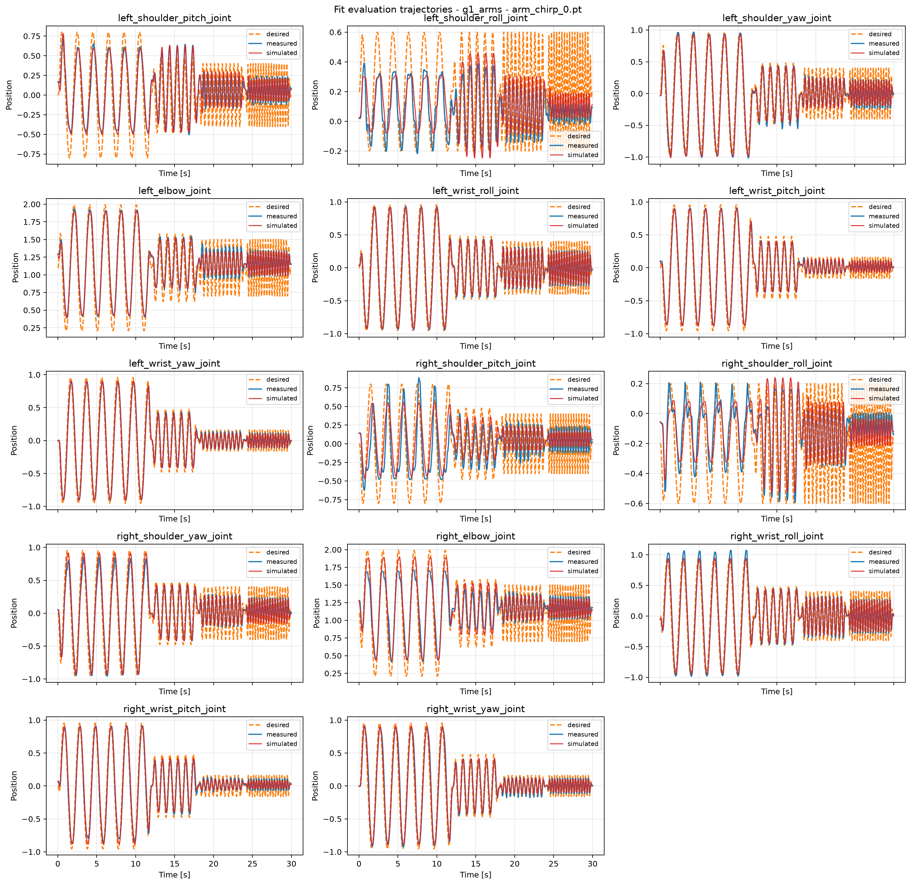
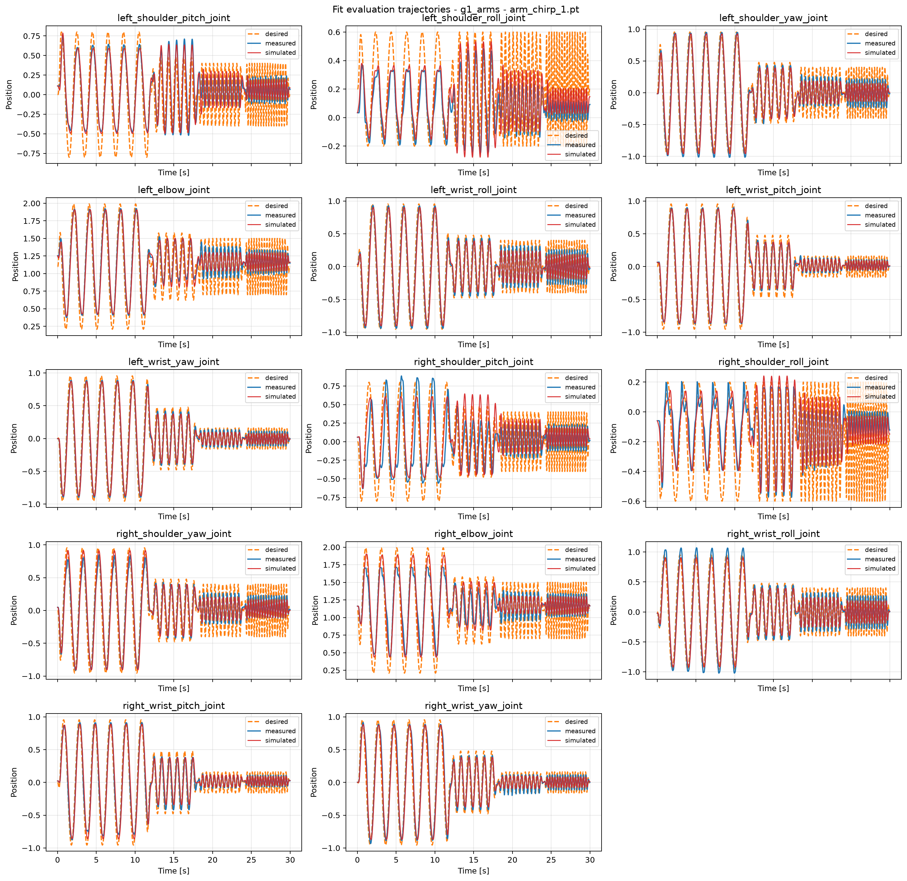
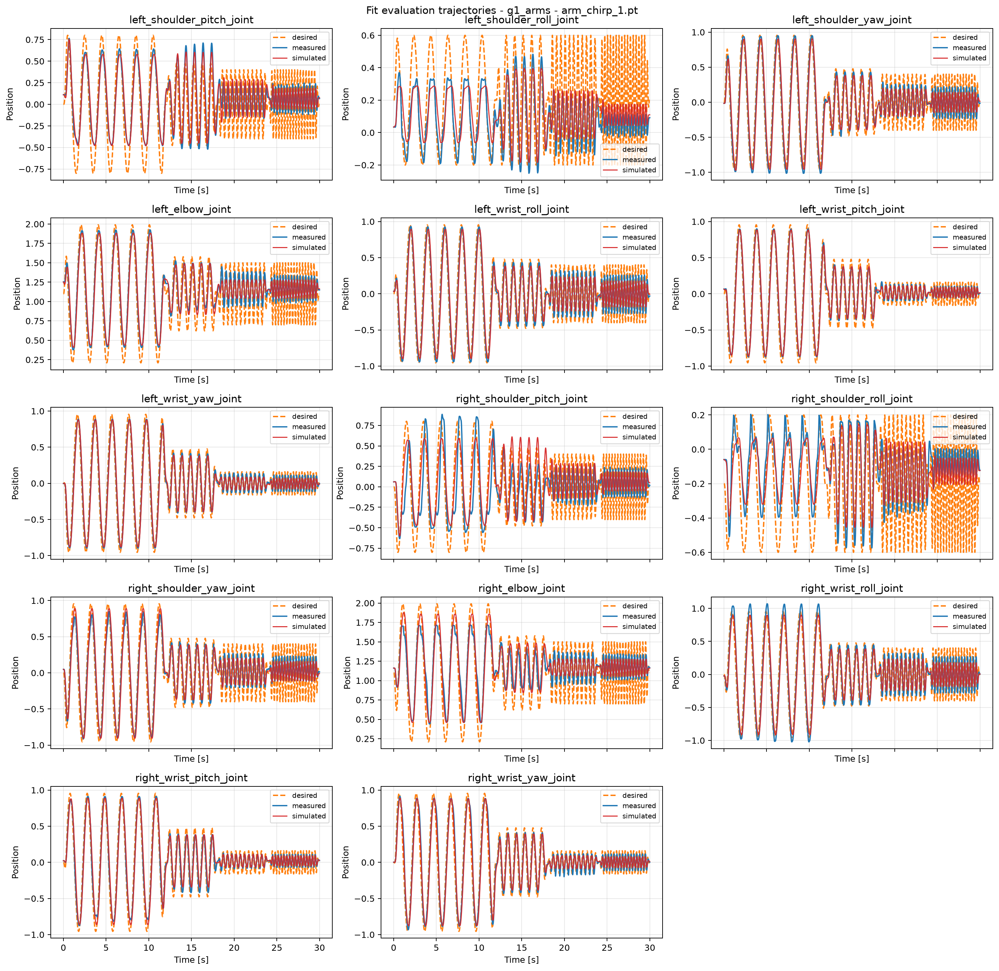
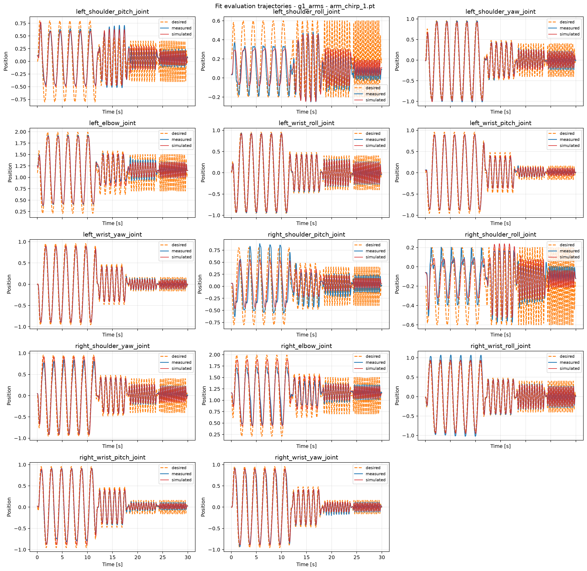
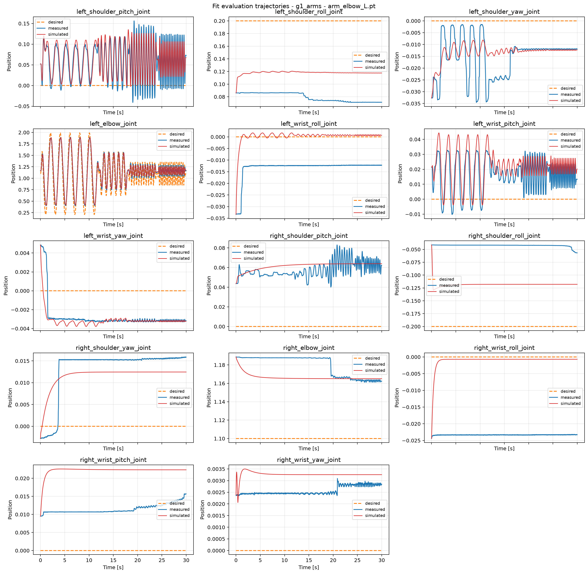
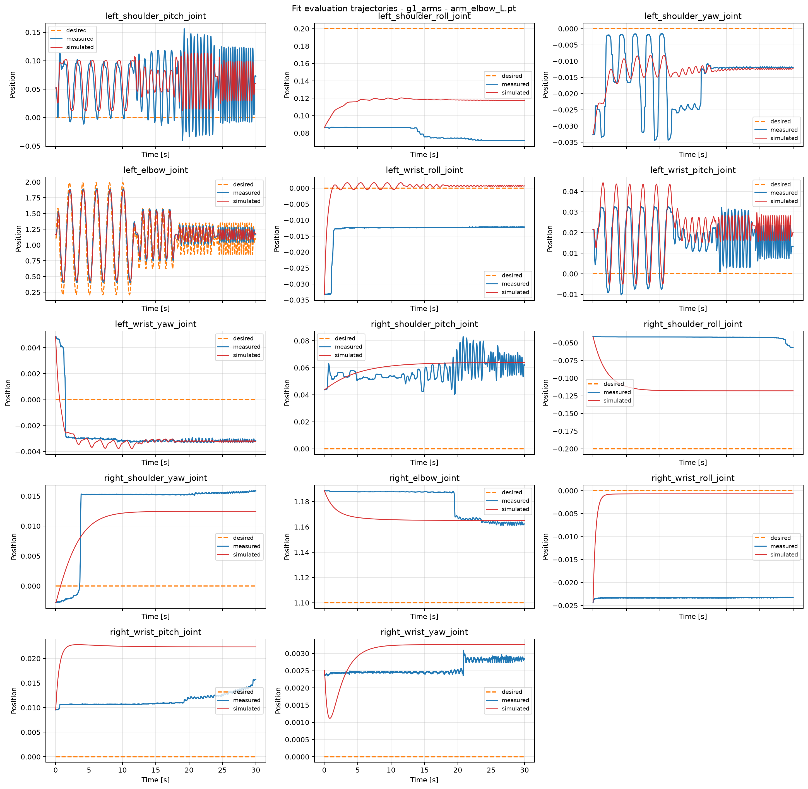
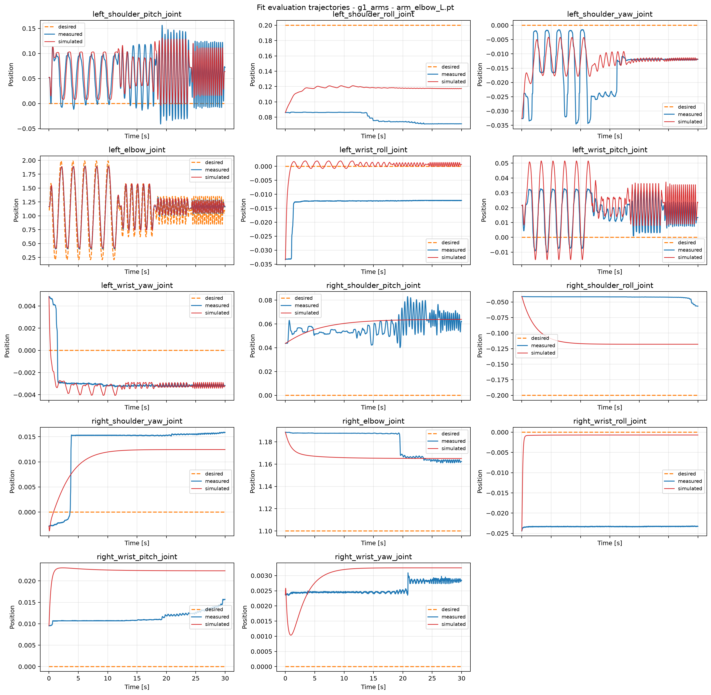
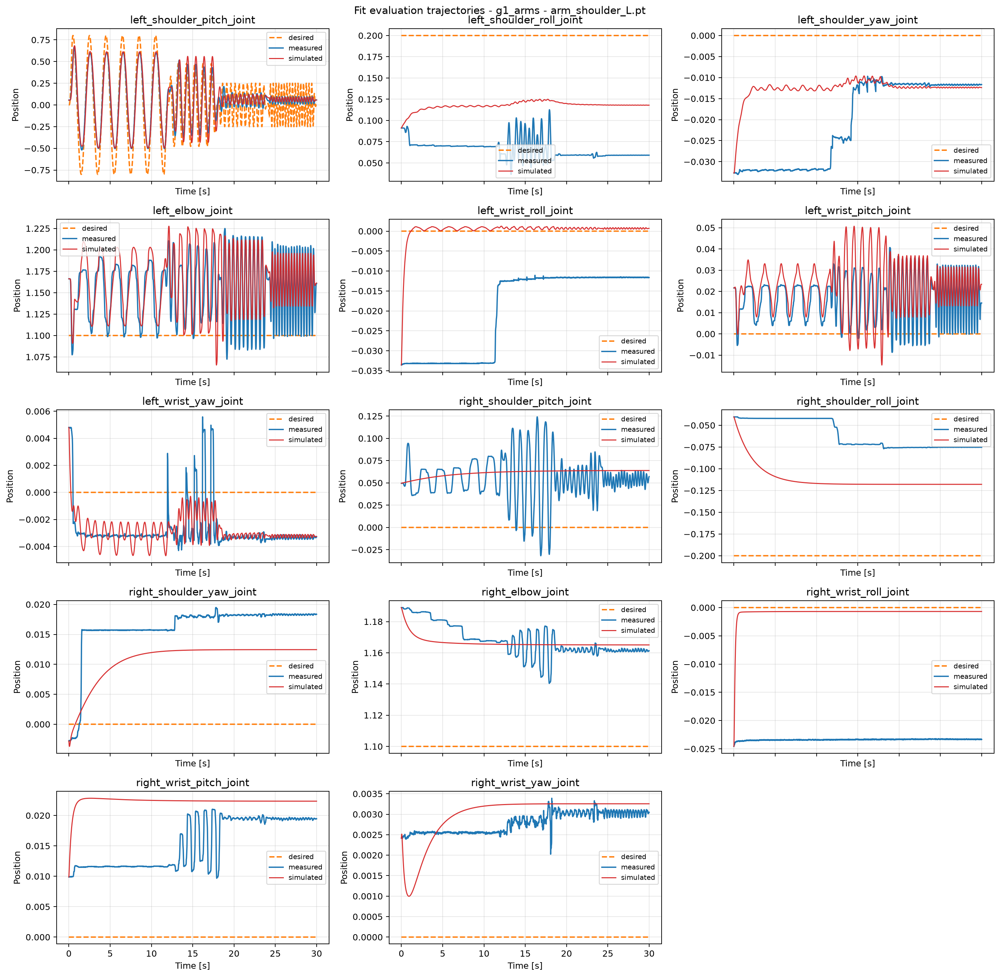

Repeatability floor 0.0163 rad; differences below it are noise.
| dataset | N nominal everything | A nominal armature/damping + measured friction | B fitted armature/damping + measured friction | split |
|---|---|---|---|---|
| arm_chirp_0 | 0.07433 | 0.07688 | 0.05202 | in fit |
| arm_chirp_1 | 0.07231 | 0.07544 | 0.05307 | in fit |
| arm_elbow_L | 0.01923 | 0.01979 | 0.01695 | HELD OUT |
| arm_shoulder_L | 0.02078 | 0.02052 | 0.02103 | HELD OUT |
| joint | N | A | B |
|---|---|---|---|
| left_elbow_joint | 0.0533 | 0.0587 | 0.0292 |
| left_shoulder_pitch_joint | 0.0615 | 0.0604 | 0.0573 |
| left_shoulder_roll_joint | 0.0697 | 0.0833 | 0.0775 |
| left_shoulder_yaw_joint | 0.0709 | 0.0790 | 0.0299 |
| left_wrist_pitch_joint | 0.0378 | 0.0359 | 0.0120 |
| left_wrist_roll_joint | 0.0661 | 0.0740 | 0.0155 |
| left_wrist_yaw_joint | 0.0406 | 0.0396 | 0.0141 |
| right_elbow_joint | 0.1064 | 0.1062 | 0.0989 |
| right_shoulder_pitch_joint | 0.2137 | 0.2052 | 0.1561 |
| right_shoulder_roll_joint | 0.0709 | 0.0761 | 0.0722 |
| right_shoulder_yaw_joint | 0.0656 | 0.0685 | 0.0533 |
| right_wrist_pitch_joint | 0.0609 | 0.0605 | 0.0346 |
| right_wrist_roll_joint | 0.0757 | 0.0828 | 0.0397 |
| right_wrist_yaw_joint | 0.0475 | 0.0461 | 0.0380 |
N nominal everything

A nominal armature/damping + measured friction

B fitted armature/damping + measured friction

N nominal everything

A nominal armature/damping + measured friction

B fitted armature/damping + measured friction

N nominal everything

A nominal armature/damping + measured friction

B fitted armature/damping + measured friction

N nominal everything
A nominal armature/damping + measured friction
B fitted armature/damping + measured friction
